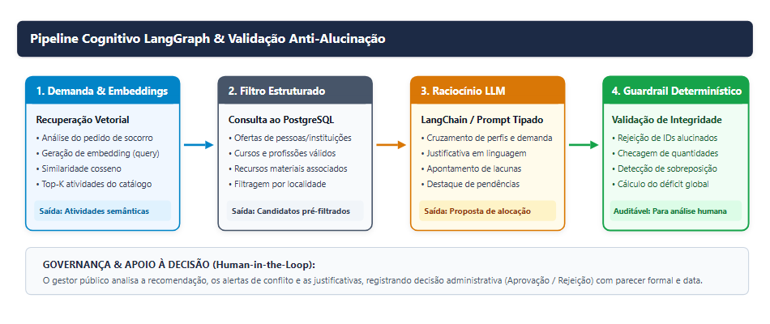

Arquitetura em Camadas & Grafo LangGraph

Plataforma Integrada de Apoio à Decisão para Cadastramento e Mobilização Inteligente de Voluntários Institucionais e Recursos em Desastres
Em desastres climáticos severos, a comoção gera ajuda voluntária maciça, mas a fragmentação de dados e a desorganização geram colapso logístico.
Vinculação direta à política pública oficial brasileira de Proteção e Defesa Civil (Decreto nº 12.652/2025).
Diretriz 3: Gestão de desastres para o fortalecimento das ações de resposta e recuperação.
Objetivo Estratégico 3.1: Aprimorar as capacidades de atuação na resposta a desastres.
Eixo de Atuação: Resposta | Prazo: Médio Prazo (até 2031) | Órgão: Sedec / MIDR
O projeto exige vínculo formal com instituições parceiras (ONGs, universidades, Cruz Vermelha, cooperativas), garantindo governança jurídica, auditoria e validação de diplomas.
Provê o alicerce computacional convergente para cadastramento, catalogação de competências verificáveis e mobilização inteligente em rede.
Articulação de 4 componentes tecnológicos estruturados resolvendo desafios específicos da resposta a desastres.
Angular 21 + Leaflet
Visualização espacial interativa; desenho vetorial de áreas de risco diretamente no mapa municipal com gravidade.
Python 3.13 + FastAPI
API assíncrona de alto desempenho, contratos fortemente tipados, validação de integridade e RFC 9457.
PostgreSQL 18 + Alembic
Integridade referencial em 29 tabelas, histórico imutável, suporte a geometrias JSONB e vetores numéricos.
LangGraph + LangChain
Busca semântica vetorial (embeddings), justificativas em linguagem natural e guardrails determinísticos.
Fluxo integrado: Área Afetada → Demanda → Busca Cognitiva → Recomendação → Decisão Humana.

Gestor demarca áreas (Várzea, Encosta, Centro) e cadastra necessidades urgentes de água, resgate e saúde.

Embeddings buscam atividades no catálogo; nó determinístico valida diplomas válidos e checa estoques reais.

O coordenador analisa a recomendação fundamentada, lê pendências e registra Aprovação/Rejeição auditável.
Indicador mensurável com metodologia comparativa e validação experimental por testes automatizados.
Redução (%) = [ (Tempo Médio Manual - Tempo Médio Assistido) / Tempo Médio Manual ] * 100
Comparação controlada em cenários idênticos. O ganho de velocidade é validado em conjunto com a exigência estrita de conformidade com diplomas reais e disponibilidade física.
A RedeSolidária prova que a convergência entre geoprocessamento, microsserviços fortemente tipados e IA orquestrada com guardrails determinísticos é o caminho ideal para transformar a Meta 3.1.3 do PN-PDC 2025–2035 em agilidade, coordenação humanitária e segurança para a população brasileira.
Redução drástica no tempo de resposta nas primeiras 72 horas pós-desastre.
Decisão humana no centro (human-in-the-loop) com histórico auditável.
Angular, FastAPI, PostgreSQL e LangGraph integrados e testados.